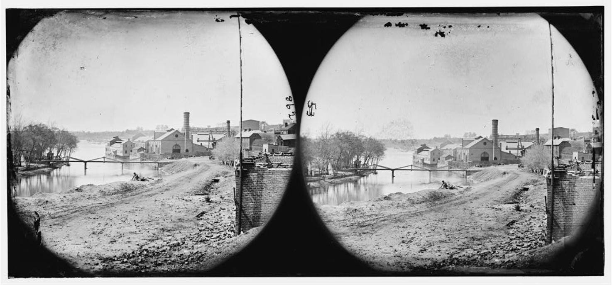

| Field | Detail |
| TOC Fit | Chapter 11 · Essay prompt 11.1 (Slavery and Capitalism) |
| Why Here | A photograph of the South’s largest ironworks on the James River in Richmond, taken just after the city fell. Students can use it to weigh how far industry had developed in the slave South, and how unusual a works on this scale was there. |
| Treatment | Public-domain photograph |
The Tredegar Iron Works, founded in 1837 on the James River canal in Richmond, became under Joseph Reid Anderson the largest iron manufacturer in the antebellum South. It made locomotives, rails, steam engines, sugar-mill machinery, and cannon. Tredegar relied on both free white workers and enslaved men, whom Anderson hired from their owners or bought outright; in 1847 white ironworkers struck against the use of enslaved men in skilled jobs, and Anderson fired them and expanded his enslaved workforce. During the Civil War Tredegar was the Confederacy’s chief source of heavy cannon and iron plate. Union forces entered Richmond on April 3, 1865; the works largely escaped the evacuation fire that burned much of the business district. Photographers who followed the army, including Alexander Gardner, recorded the works within days. Editorial note. The Norton Online Reader image could not be consulted for this reader, so this entry uses a public-domain photograph of the Tredegar works from the Library of Congress’s Civil War glass negatives (Alexander Gardner, April 1865). The Library of Congress also holds an albumen print, “The Tredegar Iron Works, Richmond, Virginia” (LC-DIG-ppmsca-34937, https://www.loc. CAUTION: The photograph was taken at the end of the Civil War, after four years of war production, and shows the works rather than the people who labored there; it is outside the 1800–1860 period and should be read as evidence about the industrial base the South had built before the war. |
|
 |
|
UNIT 3 · AN EXPANDING NATION | HISTORY B17A | DANIEL GARZA, M.A.
|